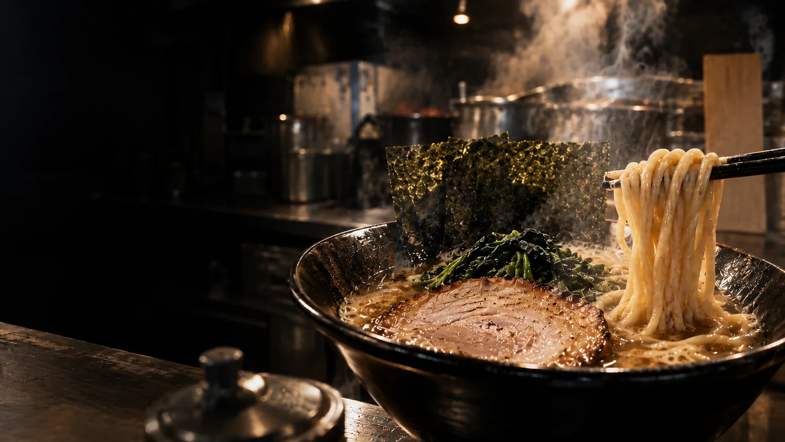
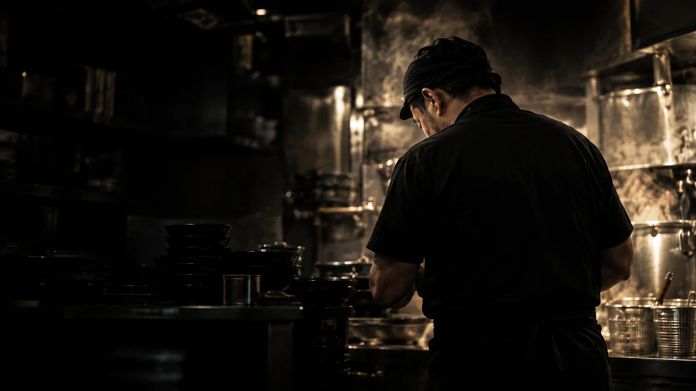
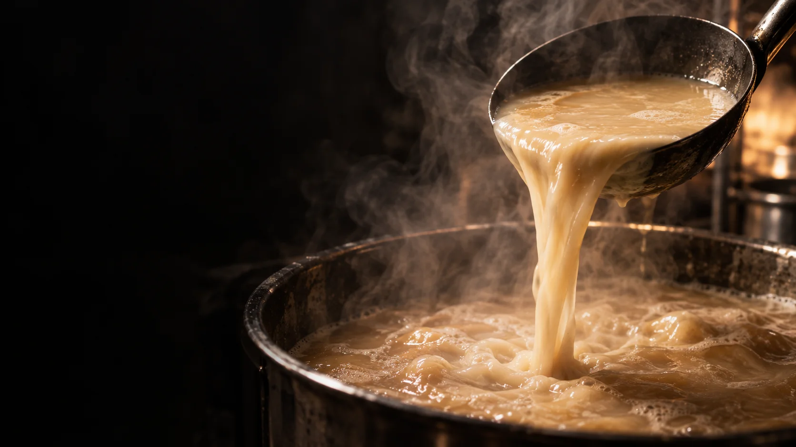
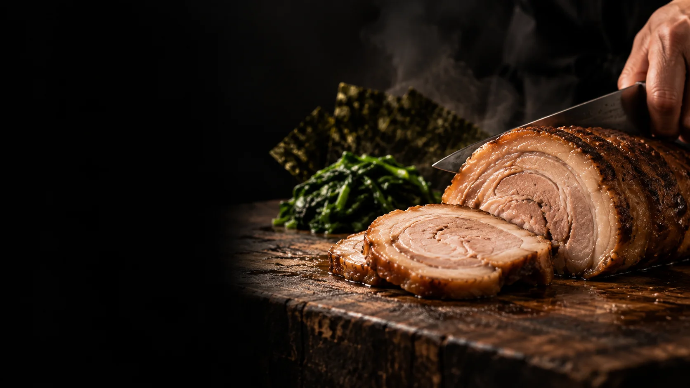
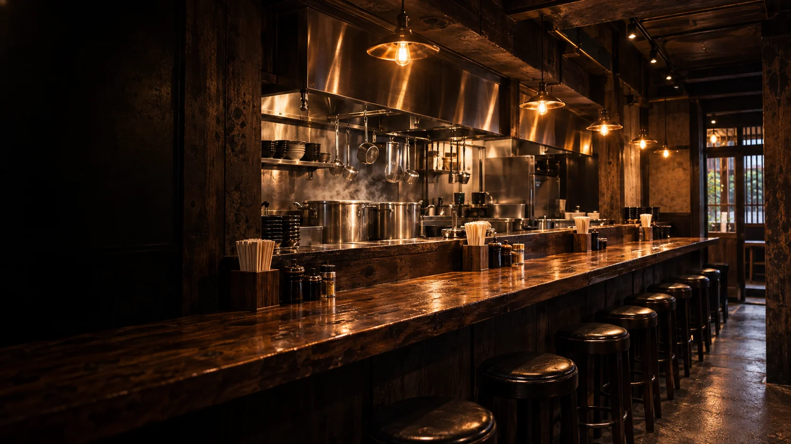
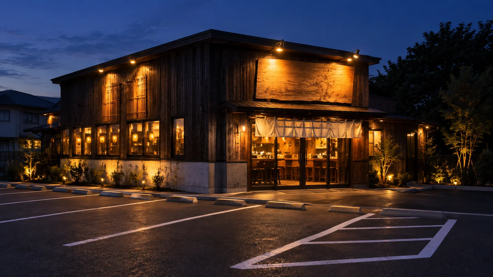

一杯に、魂を込めて。
横浜家系らーめん
本格家系を、とで食わせる。
濃厚豚骨醤油 ／ 麺・スープ・具材に妥協なし ／ 駐車場完備
2026.10 GRAND OPEN
この一杯が、また誰かの伝説になる。
完備

OUR SPIRIT
腕と火がつくる、
本物の一杯。
ただのラーメンではない。
炊き続ける、研ぎ澄ます、仕込み続ける。
その積み重ねが、腕火屋の一杯になる。
家系の誇りを、ここから。

一、炊く。
濃厚豚骨醤油スープ
じっくりと炊き上げた豚骨から
生まれる、濃厚でまろやかな旨味。
継ぎ足しではなく、その日の一杯のために
丁寧に炊き上げる。
二、絡む。
力強い中太麺
濃厚なスープをしっかり受け止める、
もっちりとした中太麺。
一口ごとに広がる、小麦の香りと
力強い食感。

三、仕込む。
妥協しない具材
旨さを支えるのは、麺とスープだけじゃない。
チャーシュー、海苔、ほうれん草。
すべての具材に、妥協はない。


店内
ラーメンと、
向き合える場所。
木の温もりと、熱気。
一杯に集中できる、
シンプルで心地よい空間です。

店舗情報
駐車場完備。
お車でも安心して
お越しいただけます。
2026.10 GRAND OPEN
この一杯が、また誰かの伝説になる。
2026年10月オープン予定（仮設定）